Alaska trip highlight · June 4, 2025 · Chichagof Island
A bear on the trail.
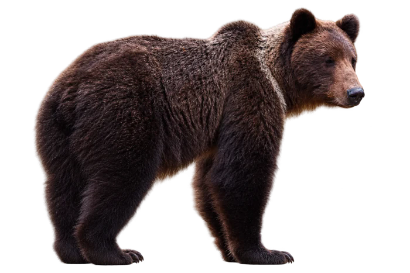
Some of my favorite photographs come with a feeling I can’t quite fit inside the frame. Encountering this bear on our hike was one of the coolest things I’ve ever captured—and one of the scariest moments of my life. I was looking at an animal I had hoped to photograph, while feeling how small I was in its world.
A moment I won’t forget
On June 4, 2025, we encountered a bear during our hike on Chichagof Island. These photos and videos follow its movements between the trail and the trees. Looking back at them brings back both feelings at once: excitement that I got to capture something so incredible, and fear at sharing the trail with such a powerful animal.
I’m grateful I got to see it. But getting a photograph doesn’t give us a right to an animal’s space. The forest is its home, and our visit is brief. A good encounter should leave the animal free to carry on with its life. That matters more than any picture I could bring home.
The photograph is mine to keep. The forest is still its home.
An island shaped by forest and water
Islands, inlets & rainforest
Chichagof belongs to Southeast Alaska’s Alexander Archipelago. Hoonah is a town on the island, and Icy Strait Point is the nearby cruise destination. The surrounding Tongass landscape includes forested islands, fjords, and mountains. Across western Chichagof and neighboring Yakobi, sheltered bays and estuaries meet spruce and hemlock forest, wet muskeg, and alpine habitat.
A forest fed by salmon
Returning salmon carry nutrients from the ocean into freshwater streams. Bears help move those nutrients into the forest as they feed, connecting the health of the trees with the water and wildlife around them.
Coastal brown bears
Brown bears and grizzlies are the same species, Ursus arctos. Coastal bears have access to salmon and rich plant foods. Chichagof is brown bear habitat; Alaska Fish and Game identifies brown bears as the resident bear species on the island.
More than their fur color
Brown bears can be very dark, and color alone is unreliable for identification. Their shoulder hump, ear shape, and longer claws are more useful clues. They are omnivores, eating plants, roots, berries, salmon, and other animal foods.
Sources: US Forest Service: Tongass · West Chichagof–Yakobi landscape · Salmon ecology · Brown bear profile · Island bear distribution
Respect comes before the photograph
These are Alaska Fish and Game’s general recommendations for bear country, rather than a description of how our particular encounter unfolded.
- Give the bear space. Never approach, crowd, feed, or block its route. Use a zoom lens instead of moving closer.
- Before an encounter: stay alert, make noise to avoid surprising bears, secure food and garbage, and carry accessible bear spray you know how to use.
- If it hasn’t noticed you: move away quietly while watching it.
- If it notices you: stay calm, face it, speak normally, group together, and ready your deterrent. If it persistently approaches or follows you, become more assertive and use your deterrent when within range. Back away slowly when possible; if it follows, stop and hold your ground. Never run.
- If an attack makes contact: a defensive brown bear attack calls for playing dead, lying face down with hands protecting your neck. Fight back if the attack persists or appears predatory, or a bear enters a tent. Responses depend on the bear’s behavior.
Watch the encounter
Press play to experience the moment beyond the photographs.
From the trail · Clip 1
From the trail · Clip 2
From the trail · Clip 3
Through my lens
The encounter in sequence. Click a photo to enlarge it; view them full size.

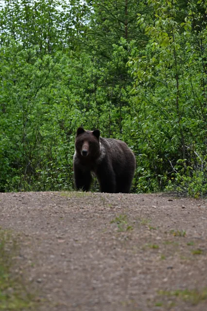

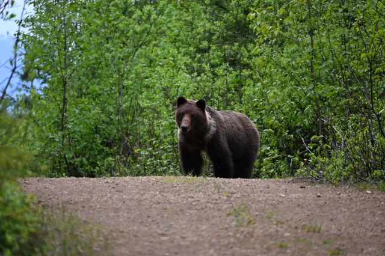

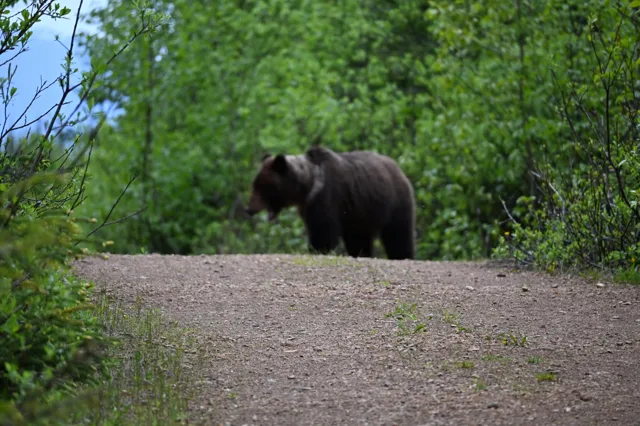

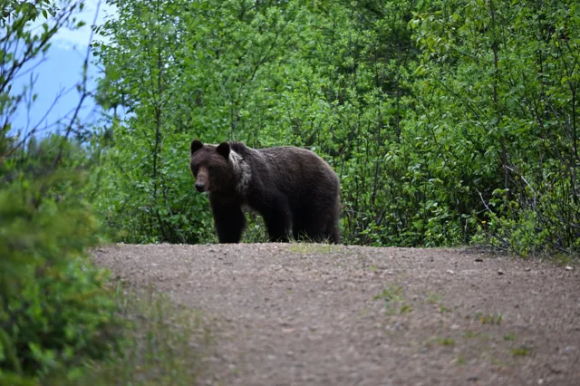

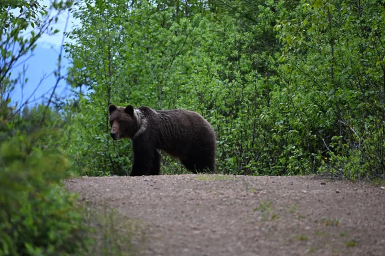

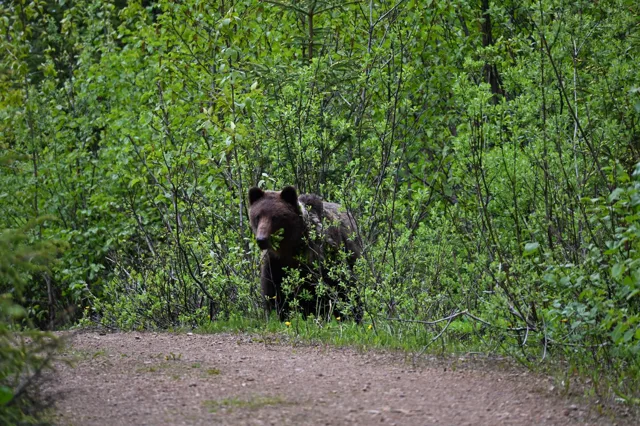

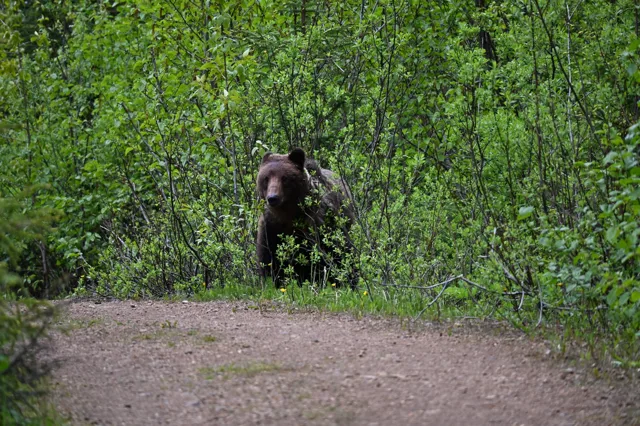

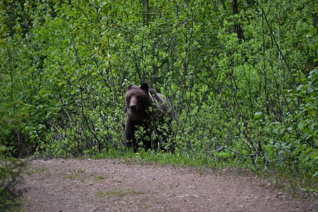

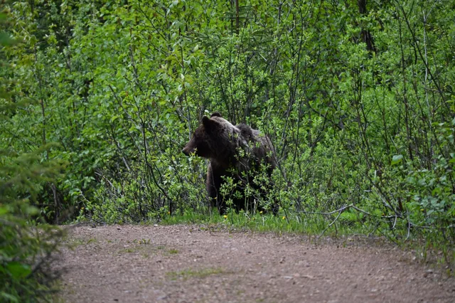

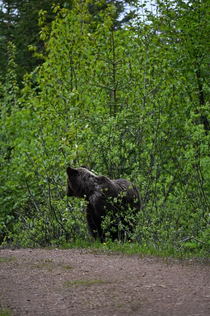

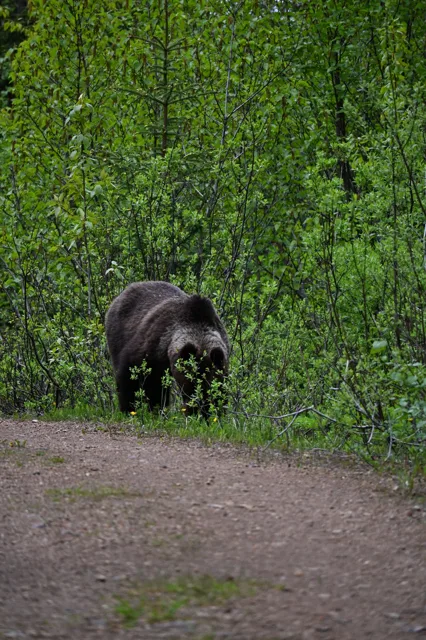

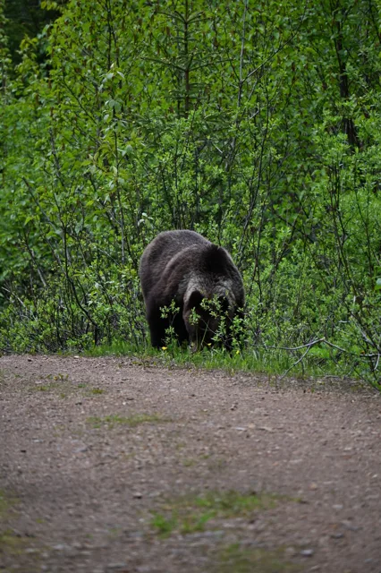

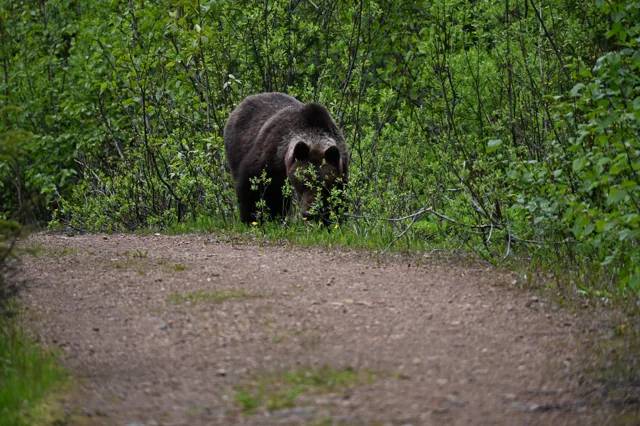

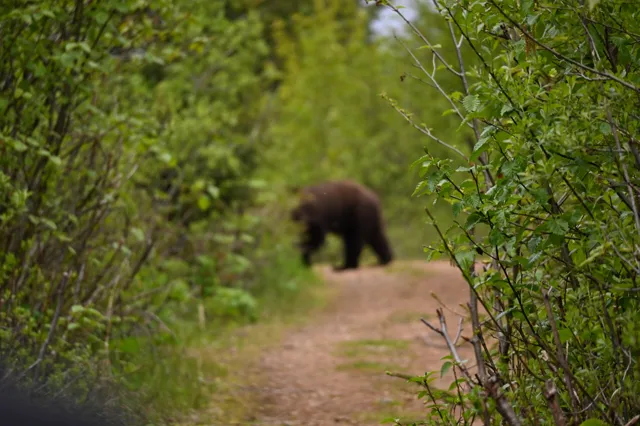

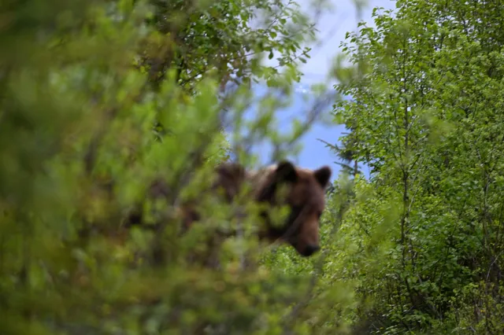

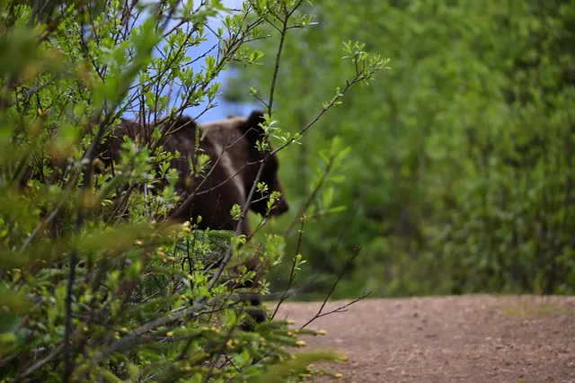

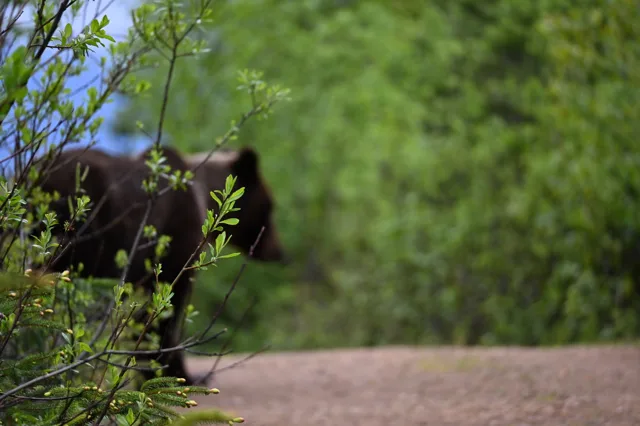

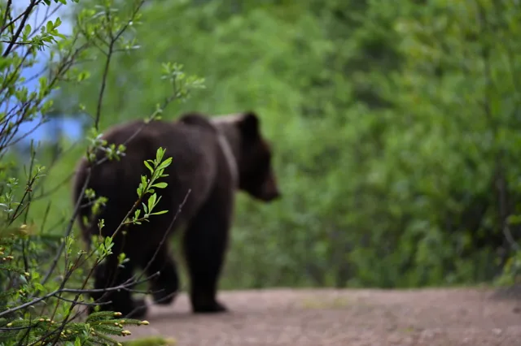

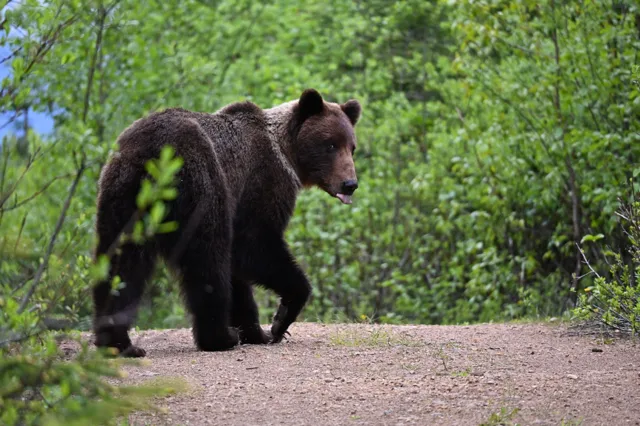

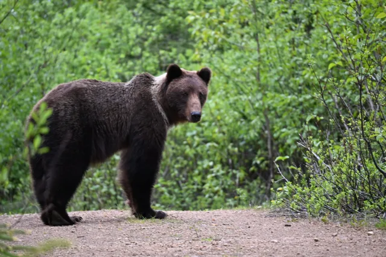
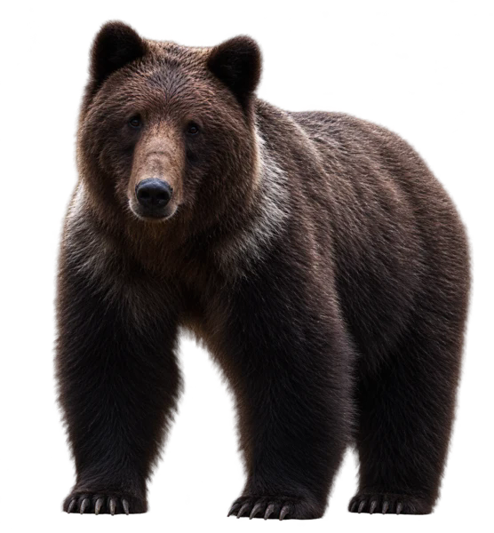
More from Alaska →